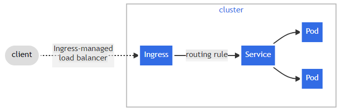
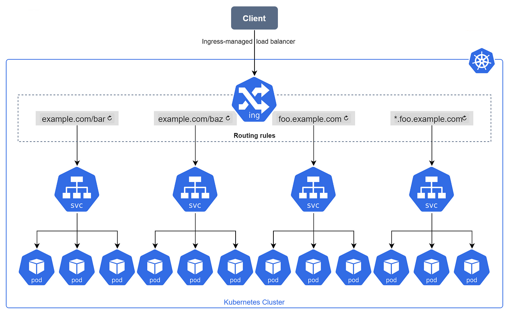
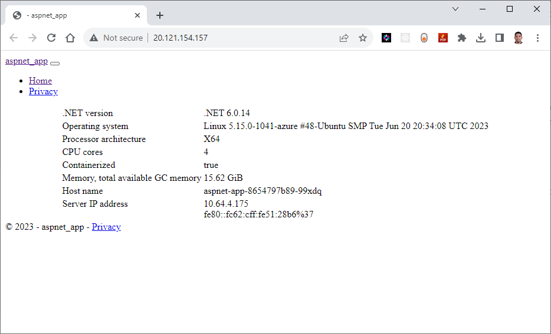
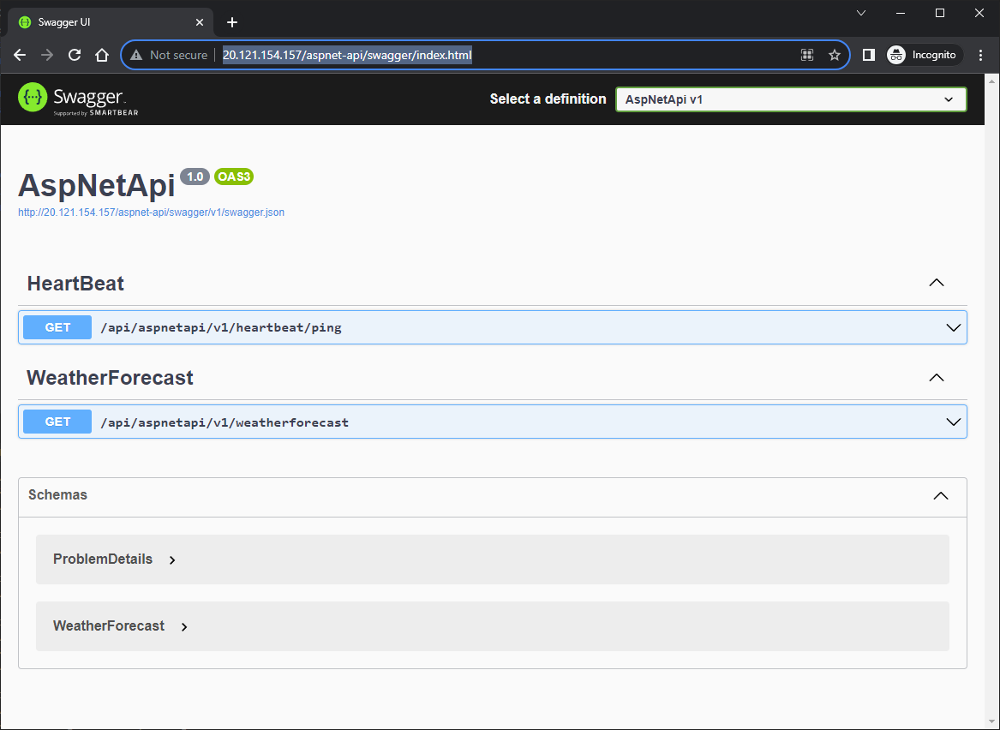

Setup NGINX ingress controller in AKS using Terraform
Introduction
NGINX Ingress Controller is a type of ingress controller, it is a piece of software (configuration) that manages incoming traffic to a Kubernetes cluster. It works as a reverse proxy and load balancer, routing incoming traffic to the appropriate Kubernetes services based on the rules defined in the ingress resources. When you use an ingress controller and ingress rules, a single IP address can be used to route traffic to multiple services in a Kubernetes cluster.
Ingress resources are Kubernetes objects that define rules for routing incoming traffic to specific services. The NGINX Ingress Controller is responsible for reading and interpreting these rules and routing the traffic accordingly.
The NGINX Ingress Controller is a popular choice for Kubernetes users because it is lightweight, highly scalable, and provides advanced features like SSL termination, rate limiting, and WebSockets support.
What is Ingress?
Ingress serves as the gateway for HTTP and HTTPS traffic from external sources into your cluster. It efficiently directs this traffic to specific services within the cluster based on predefined rules set on the Ingress resource.

Reference diagram from Kubernetes documentation.
Technical Scenario
As a Cloud Engineer you've been asked to setup the NGINX ingress controller in an Azure Kubernetes Service (AKS) cluster. also deploy couple of applications in the AKS cluster, each of which is accessible over the single IP address.
Install ingress-nginx controller helm chart using terraform
Another requirement here is to make sure that installation of Nginx ingress controller in AKS is completely automated, to fulfill this requirement we are going to use terraform configuration to install the ingress-nginx controller in our AKS.
Note
There are two open source ingress controllers for Kubernetes based on Nginx:
- One is maintained by the Kubernetes community (kubernetes/ingress-nginx),
- Second one is maintained by NGINX, Inc. (nginxinc/kubernetes-ingress).
Here we will be using the Kubernetes community ingress controller.
Prerequisites
Ensure that you have a Kubernetes cluster up and running along with following:
- Azure subscription - https://azure.microsoft.com/en-us/free/
- Install and configure Terraform - https://www.terraform.io/downloads
- Define Terraform providers for Helm Install
- helm provider
- Kubernetes provider
- Kubectl provider
- Install azure CLI - https://learn.microsoft.com/en-us/cli/azure/install-azure-cli
- Install and setup kubectl - https://kubernetes.io/docs/tasks/tools/install-kubectl-windows/
- Install Helm client
- Azure Container Registry (ACR) Create Azure Container Registry (ACR) using terraform
- Azure Kubernetes Service (AKS) Create Azure Kubernetes Service (AKS) using terraform
Objective
In this exercise we will accomplish & learn how to implement following:
- Step 1. Create a new namespace for Nginx ingress Controller
- Step 2: Install ingress nginx controller using terraform
- Step 3: Verify ingress-nginx resources in AKS
- Step 4: Deploy sample applications for Ingress testing
- Step 5: Create an ingress route
- Step-6: Test the ingress controller (Browse website URLs)
- Step-7: Add DNS recordset in DNS Zone
- Step-8: Create Ingress YAML file (Apply Let's Encrypt changes)
Architecture diagram
Here is the high level architecture diagram of ingress nginx controller components.

login to Azure
Verify that you are logged into the right Azure subscription before start anything in visual studio code
# Login to Azure
az login
# Shows current Azure subscription
az account show
# Lists all available Azure subscriptions
az account list
# Sets Azure subscription to desired subscription using ID
az account set -s "anji.keesari"
Connect to Cluster
# Azure Kubernetes Service Cluster User Role
az aks get-credentials -g "rg-aks-dev" -n "aks-cluster1-dev"
# Azure Kubernetes Service Cluster Admin Role
az aks get-credentials -g "rg-aks-dev" -n "aks-cluster1-dev" --admin
# get nodes
kubectl get no
kubectl get namespace -A
Implementation Details
The steps given below will guide you through the process of setting up Nginx Ingress Controller in your AKS cluster. By the end of this exercise, you'll have a functional environment for ingress route working for applications within Kubernetes.
Step-1: Configure Terraform providers
Launch Visual Studio Code and open your current Terraform repository to begin working on your Terraform configuration.
In order to install any Helmcharts using terraform configuration we need to have following terraform providers.
- helm provider
- Kubernetes provider
- Kubectl provider
The Helm Provider allows you to manage your Helm charts and releases as part of your Terraform-managed infrastructure. With the Helm Provider, you can define your charts as Terraform resources and manage their installation and updates through Terraform.
With Terraform, you can manage the installation, upgrades, and deletion of your Helm charts in a repeatable, version-controlled manner. This can help simplify your infrastructure management, ensure consistency and repeatability, and reduce the chance of manual errors.
terraform providers
You can install the necessary providers by adding the following code in your Terraform configuration file:
Let's update our existing provider.tf file with new kubernetes, helm and kubectl providers:
terraform {
required_version = ">=0.12"
required_providers {
azurerm = {
source = "hashicorp/azurerm"
version = "~>2.0"
}
azuread = {
version = ">= 2.26.0" // https://github.com/terraform-providers/terraform-provider-azuread/releases
}
kubernetes = {
source = "hashicorp/kubernetes"
version = ">= 2.0.3"
}
helm = {
source = "hashicorp/helm"
version = ">= 2.1.0"
}
kubectl = {
source = "gavinbunney/kubectl"
version = ">= 1.7.0"
}
}
}
provider "kubernetes" {
host = azurerm_kubernetes_cluster.aks.kube_admin_config.0.host
client_certificate = base64decode(azurerm_kubernetes_cluster.aks.kube_admin_config.0.client_certificate)
client_key = base64decode(azurerm_kubernetes_cluster.aks.kube_admin_config.0.client_key)
cluster_ca_certificate = base64decode(azurerm_kubernetes_cluster.aks.kube_admin_config.0.cluster_ca_certificate)
#load_config_file = false
}
provider "helm" {
debug = true
kubernetes {
host = azurerm_kubernetes_cluster.aks.kube_admin_config.0.host
client_certificate = base64decode(azurerm_kubernetes_cluster.aks.kube_admin_config.0.client_certificate)
client_key = base64decode(azurerm_kubernetes_cluster.aks.kube_admin_config.0.client_key)
cluster_ca_certificate = base64decode(azurerm_kubernetes_cluster.aks.kube_admin_config.0.cluster_ca_certificate)
}
}
provider "kubectl" {
host = azurerm_kubernetes_cluster.aks.kube_admin_config.0.host
client_certificate = base64decode(azurerm_kubernetes_cluster.aks.kube_admin_config.0.client_certificate)
client_key = base64decode(azurerm_kubernetes_cluster.aks.kube_admin_config.0.client_key)
cluster_ca_certificate = base64decode(azurerm_kubernetes_cluster.aks.kube_admin_config.0.cluster_ca_certificate)
load_config_file = false
}
If you want to know more information about these provides, you can use following links for further reading.
helm provider
more info - https://registry.terraform.io/providers/hashicorp/helm/latest/docs
Kubernetes provider
more info - https://registry.terraform.io/providers/hashicorp/kubernetes/latest/docs
Kubectl provider
more info - https://registry.terraform.io/providers/gavinbunney/kubectl/latest/docs
terraform init
Since we added new providers in the terraform providers list, it is necessary to run the terraform init once again.
outputInitializing the backend...
Initializing provider plugins...
- Reusing previous version of hashicorp/azurerm from the dependency lock file
- Reusing previous version of hashicorp/azuread from the dependency lock file
- Finding hashicorp/kubernetes versions matching ">= 2.0.3"...
- Reusing previous version of hashicorp/random from the dependency lock file
- Finding hashicorp/helm versions matching ">= 2.1.0"...
- Finding gavinbunney/kubectl versions matching ">= 1.7.0"...
- Installing hashicorp/kubernetes v2.18.1...
- Installed hashicorp/kubernetes v2.18.1 (signed by HashiCorp)
- Using previously-installed hashicorp/random v3.4.3
- Installing hashicorp/helm v2.9.0...
- Installed hashicorp/helm v2.9.0 (signed by HashiCorp)
- Installing gavinbunney/kubectl v1.14.0...
- Installed gavinbunney/kubectl v1.14.0 (self-signed, key ID AD64217B5ADD572F)
- Using previously-installed hashicorp/azurerm v3.31.0
- Using previously-installed hashicorp/azuread v2.33.0
Terraform has been successfully initialized!
Step-2: Create a new namespace for ingress
Create a separate namespace for nginx-ingress so that ingress specific AKS resources together in one single namespace and logically isolated from other Kubernetes resources. let's create a file called nginx-ingress.tf and copy following terraform configuration.
run terraform plan
output + create
Terraform will perform the following actions:
# kubernetes_namespace.ingress will be created
+ resource "kubernetes_namespace" "ingress" {
+ id = (known after apply)
+ metadata {
+ generation = (known after apply)
+ name = "ingress"
+ resource_version = (known after apply)
+ uid = (known after apply)
}
}
Plan: 1 to add, 0 to change, 0 to destroy.
Step-2: Install ingress resources with helm-chart using terraform
Now it is time to install ingress helm chart in AKS cluster.
We are going to get the ingress helm chart details from official Nginx ingress ArtifactHUB website.
https://artifacthub.io/packages/helm/ingress-nginx/ingress-nginx - click on Install button and get following helm-chart details
we are going to use the helm_release terraform resource to install the Helm Chart:
# Install ingress helm chart using terraform
resource "helm_release" "ingress" {
name = "ingress"
repository = "https://kubernetes.github.io/ingress-nginx"
chart = "ingress-nginx"
version = "4.5.2"
namespace = kubernetes_namespace.ingress.metadata.0.name
depends_on = [
kubernetes_namespace.ingress
]
}
Let's run terraform plan
output# helm_release.ingress will be created
+ resource "helm_release" "ingress" {
+ atomic = false
+ chart = "ingress-nginx"
+ cleanup_on_fail = false
+ create_namespace = false
+ dependency_update = false
+ disable_crd_hooks = false
+ disable_openapi_validation = false
+ disable_webhooks = false
+ force_update = false
+ id = (known after apply)
+ lint = false
+ manifest = (known after apply)
+ max_history = 0
+ metadata = (known after apply)
+ name = "ingress"
+ namespace = "ingress"
+ pass_credentials = false
+ recreate_pods = false
+ render_subchart_notes = true
+ replace = false
+ repository = "https://kubernetes.github.io/ingress-nginx"
+ reset_values = false
+ reuse_values = false
+ skip_crds = false
+ status = "deployed"
+ timeout = 300
+ verify = false
+ version = "4.5.2"
+ wait = true
+ wait_for_jobs = false
}
Plan: 1 to add, 0 to change, 0 to destroy.
run terraform apply
helm_release.ingress: Creating...
helm_release.ingress: Still creating... [10s elapsed]
helm_release.ingress: Still creating... [20s elapsed]
helm_release.ingress: Still creating... [30s elapsed]
helm_release.ingress: Still creating... [40s elapsed]
helm_release.ingress: Still creating... [50s elapsed]
helm_release.ingress: Still creating... [1m0s elapsed]
helm_release.ingress: Creation complete after 1m7s [id=ingress]
Apply complete! Resources: 1 added, 0 changed, 0 destroyed.
Outputs:
Step 3. Verify Ingress-Nginx resources in AKS.
Step-2 terraform output shows that helm chart installation is successful therefore in this step we can validate Ingress-Nginx installation by running following commands.
Connect to AKS cluster
# azure CLI
# Azure Kubernetes Service Cluster User Role
az aks get-credentials -g "rg-aks-dev" -n "aks-cluster1-dev"
# Azure Kubernetes Service Cluster Admin Role
az aks get-credentials -g "rg-aks-dev" -n "aks-cluster1-dev" --admin
Get pods and services related to ingress.
kubectl get namespace ingress
kubectl get deployments -n ingress
kubectl get pods -n ingress
kubectl get services -n ingress
kubectl get configmaps -n ingress
kubectl get secrets -n ingress
Get all resources related to ingress.
NAME READY STATUS RESTARTS AGE
pod/ingress-ingress-nginx-controller-f9c49b469-rjdlw 1/1 Running 0 4m32s
NAME TYPE CLUSTER-IP EXTERNAL-IP PORT(S) AGE
service/ingress-ingress-nginx-controller LoadBalancer 10.25.221.77 20.121.154.157 80:30515/TCP,443:31485/TCP 4m33s
service/ingress-ingress-nginx-controller-admission ClusterIP 10.25.113.145 <none> 443/TCP 4m33s
NAME READY UP-TO-DATE AVAILABLE AGE
deployment.apps/ingress-ingress-nginx-controller 1/1 1 1 4m32s
NAME DESIRED CURRENT READY AGE
replicaset.apps/ingress-ingress-nginx-controller-f9c49b469 1 1 1 4m32s
configmaps details
Ingress secrets
NAME TYPE DATA AGE
default-token-p2kjg kubernetes.io/service-account-token 3 19m
ingress-ingress-nginx-admission Opaque 3 19m
ingress-ingress-nginx-token-vnpw8 kubernetes.io/service-account-token 3 19m
sh.helm.release.v1.ingress.v1 helm.sh/release.v1 1 19m
output
CRDs
kubectl get clusterrole -n ingress
kubectl get clusterrolebinding -n ingress
kubectl get CustomResourceDefinition -n ingress
or
kubectl get crd -l app.kubernetes.io/name=cert-manager
outputs from above commands shows that Nginx ingress controller is installed correctly in our AKS cluster and ready to use by deploying a application in AKS.
Step 4: Deploy sample applications for Ingress testing
Since we confirmed that Nginx ingress controller is successfully install in our AKS, we can now deploy few Microservices which we built in Microservices chapter and test the Ingress controller to make sure it is routing the request to our backend AKS cluster services.
Create a new namespace
We are going to deploy our application in separate namespace in AKS instead of in default namespace. use this command to create new namespace in Kubernetes cluster. Let's name our namespace as sample
aspnet-api
Deployment YAML (deployment.yaml)
apiVersion: apps/v1
kind: Deployment
metadata:
name: aspnet-api
namespace: sample
spec:
replicas: 1
selector:
matchLabels:
app: aspnet-api
strategy:
type: RollingUpdate
rollingUpdate:
maxSurge: 1
maxUnavailable: 1
minReadySeconds: 5
template:
metadata:
labels:
app: aspnet-api
spec:
nodeSelector:
"kubernetes.io/os": linux
serviceAccountName: default
containers:
- name: aspnet-api
image: acr1dev.azurecr.io/sample/aspnet-api:20230323.15
imagePullPolicy: Always
ports:
- name: http
containerPort: 80
protocol: TCP
# kubectl apply -f deployment.yaml -n sample
Service YAML (service.yaml)
apiVersion: v1
kind: Service
metadata:
name: aspnet-api
namespace: sample
labels: {}
spec:
type: ClusterIP #LoadBalancer
ports:
- port: 80
targetPort: 80
protocol: TCP
name: http
selector:
app: aspnet-api
# kubectl apply -f service.yaml -n sample
Apply the YAML manifests to deploy your ASP.NET Core MVC application:
Create Kubernetes YAML Manifests files for aspnet-app
Deployment YAML (deployment.yaml)
apiVersion: apps/v1
kind: Deployment
metadata:
name: aspnet-app
namespace: sample
spec:
replicas: 1
selector:
matchLabels:
app: aspnet-app
strategy:
type: RollingUpdate
rollingUpdate:
maxSurge: 1
maxUnavailable: 1
minReadySeconds: 5
template:
metadata:
labels:
app: aspnet-app
spec:
nodeSelector:
"kubernetes.io/os": linux
serviceAccountName: default
containers:
- name: aspnet-app
image: acr1dev.azurecr.io/sample/aspnet-app:20230312.1
imagePullPolicy: Always
ports:
- name: http
containerPort: 80
protocol: TCP
# kubectl apply -f deployment.yaml -n sample
Service YAML (service.yaml)
apiVersion: v1
kind: Service
metadata:
name: aspnet-app
namespace: sample
labels: {}
spec:
type: ClusterIP #LoadBalancer
ports:
- port: 80
targetPort: 80
protocol: TCP
name: http
selector:
app: aspnet-app
# kubectl apply -f service.yaml -n sample
Apply the YAML manifests to deploy your ASP.NET Core MVC application:
Verify the kubernetes objects deployment
kubectl get all -n sample
# output
NAME READY STATUS RESTARTS AGE
pod/aspnet-api-79b4cbf4bb-5dljg 1/1 Running 0 20h
pod/aspnet-app-8654797b89-99xdq 1/1 Running 0 50m
NAME TYPE CLUSTER-IP EXTERNAL-IP PORT(S) AGE
service/aspnet-api ClusterIP 10.25.69.201 <none> 80/TCP 178d
service/aspnet-app ClusterIP 10.25.243.72 <none> 80/TCP 50m
NAME READY UP-TO-DATE AVAILABLE AGE
deployment.apps/aspnet-api 1/1 1 1 12d
deployment.apps/aspnet-app 1/1 1 1 50m
NAME DESIRED CURRENT READY AGE
replicaset.apps/aspnet-api-79b4cbf4bb 1 1 1 12d
replicaset.apps/aspnet-app-8654797b89 1 1 1 50m
Step-5: Create an ingress route
Create a new file named ingress.yaml and copy in the following YAML.
apiVersion: networking.k8s.io/v1
kind: Ingress
metadata:
name: aspnet-ingress
annotations:
nginx.ingress.kubernetes.io/ssl-redirect: "false"
nginx.ingress.kubernetes.io/use-regex: "true"
nginx.ingress.kubernetes.io/rewrite-target: /$2
spec:
ingressClassName: nginx
rules:
- http:
paths:
- path: /aspnet-app(/|$)(.*)
pathType: Prefix
backend:
service:
name: aspnet-app
port:
number: 80
- path: /aspnet-api(/|$)(.*)
pathType: Prefix
backend:
service:
name: aspnet-api
port:
number: 80
- path: /(.*)
pathType: Prefix
backend:
service:
name: aspnet-app
port:
number: 80
Get Ingress
kubectl get ingress -n sample
# output
NAME CLASS HOSTS ADDRESS PORTS AGE
aspnet-ingress nginx * 20.121.154.157 80 58s
Note
Verify same static IP (20.121.154.157) address assigned to both applications here.
Step-6: Test the ingress controller
To test the routes for the ingress controller, browse two applications with path prefix mentioned in the ingress.
for example
ASP.NET MVC applications
http://20.121.154.157/aspnet-app/

aspnet-api Swagger URL
http://20.121.154.157/aspnet-api/swagger/index.html

Step-7: Add DNS Recordset in DNS Zone
There are two types of DNS zones in Azure:
-
Public DNS Zones: These DNS zones are publicly accessible on the internet and can be used to map domain names to IP addresses. You can use public DNS zones to host your website publicly accessible.
-
Private DNS Zones: These DNS zones are not publicly accessible on the internet and are used to map domain names to private IP addresses within your virtual network. You can use private DNS zones to enable DNS name resolution between resources in your virtual network.
If you want to browse the URL with your custom domain instead of IP address like above you need create A recordset in one of the DNS zones depending on how you want to access your URL.
An A record (Address Record) maps a domain name to an IPv4 address. Here we will map A record in DNS Zone.
You can create A recordset in DNS zone using the Azure portal, Azure CLI, or Azure PowerShell.
To create A record set in a DNS zone in Azure portal, follow these steps:
- Sign in to the Azure portal (https://portal.azure.com).
- In the left-hand menu, click on "All services" and type "DNS zones" in the search box. Click on "DNS zones" when it appears in the results.
- Select the DNS zone in which you want to create the record set.
- Click on the "Record set" button at the top of the page.
- In the "Add record set" blade, enter the following information:
- Name: The name of the record set
- Type: The type of DNS record you want to create, such as A, AAAA, CNAME, MX, NS, PTR, SRV, or TXT.
- TTL: The time-to-live value for the DNS record, in seconds.
- IP address : The value or values associated with the DNS record, such as an IP address for an A record
- Click the "Add" button to create the record set.
Once the record set is created, it may take a few minutes for the changes to propagate across the internet. You can view and manage your DNS record sets in the Azure portal or by using Azure CLI or PowerShell commands.
Reference:
Implementation
- https://artifacthub.io/packages/helm/ingress-nginx/ingress-nginx - get helm chart details from here
- https://learn.microsoft.com/en-us/azure/aks/ingress-basic?tabs=azure-powershell - get the sample application from here
- https://kubernetes.github.io/ingress-nginx/ - NGINX Ingress Controller official documentation
- https://kubernetes.github.io/ingress-nginx/deploy/#azure Installation Guide